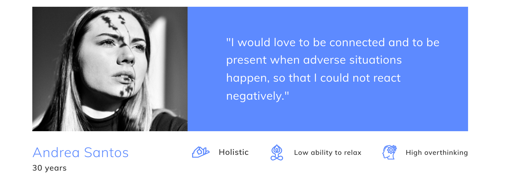

Serene Mobile App

We all know that we live in a frenetic world, with a fast pace of life, and also we all face stressful situations throughout our lives. It is something that we have to learn how to deal with, but do we know how to control ourselves? Do we know how to manage stress? Are we capable of controlling it?
About the App
Serene is a mobile app that helps users to reach serenity and peace, living a life stress-free using alternaties therapies, such as Tapping and Sound Healing, favoring stress management and control of negative responses to adverse situations at any time and in an effective way.
The challenge
Stress is a very wide concept and it is one of the biggest problems in our society. Focusing on that, I carried out a project in which I had the challenge of improving the experience of people who suffer stress through alternative therapies, applying Design Thinking methodology.

The process
To the development of Serene App, I followed the Design Thinking Methodology: Emphatize, Decide, Ideate, Prototype and Test. As part of any project, research is essential, so I started documenting myself.
- UX Research: Research Questions, Desk Research, Benchmarking, users and expert interview, surveys
- Humanizing the project: Persona, User Journey, Scenarios
- Detection of Insights, Point of View, HMW, Value Proposition and prioritization of ideas (MoSCoW)
- Storyboard and Conceptual Moodboard
- UI Development: Style Guide and Prototyping
- Visual Identity
- User Test and iteration
Survey & Interview
This is one of the biggest challenges within UX Research: Get to know users, capture stories, get pain points. I conducted a user survey to get a better understanding of the problem. I surveyed +150 people to to investigate how people deal with stressful situations, as well as to know their most frequent reactions.
I conducted in-depth interviews with 4 users. If stress is a factor that affects the vast majority of the population, I wanted to find out how true that was, so the selection of users to interview was quite open. I could collect very valuable information that I had not obtained from the surveys:
- All of them have a different reaction to stress.
- They forget to practice relaxation therapies.
- They love to reduce stress by listening to music.
- They don’t have time. People are always busy and don’t have time to practice longs therapies.
“I wish I had had a tool that would have helped me to deal with difficult situations. Since I was little I have suffered from stress.”
User Persona & User Journey Map
Andrea is my persona. She has an affinity for holistic aspects and get easily stressed, as well as the habit of overthinking and difficult to get relaxed. She accompanied me throughout the entire product development process.

With the Journey Map done, I was able to detect pain points and frustrations, having the opportunity to offer improvements and make a better product keeping the focus on my persona, Andrea.

Insights & HMW
Everything that I’ve learned and all the information that I got, was very useful to give the project a sense. The most important insights were the three above. Basically, users don’t know how to deal with a stressful situation, they don’t have enough time to practice long therapies, and neither they don’t remember to do it when they are in a problematic situation. It is for that reason, it is important to offer them a way to reduce stress and control it in an effective way and in a little time.
With the insights done and also the four main factors obtained, I could make the HMW, and from there, all the ideas began to emerge. I found out that Tapping therapy was a good method to relieve stress, and could help users to resolve their principal problems to reach relaxation, doing it in just a few minutes, and also helping them to free out their feelings. With the fact about music, I found out that there was an alternative therapy that was related to it: Sound Healing, which is a practice that uses vibrations, like gongs, Tibetan singing bowls, and tuning forks, to relax your mind and body, helping to relieve stress. After, I used these two therapies to conduct the solution.
User flow
I defined the steps that I had to take to achieve a specific objective and thus have a clearer vision.

Conceptual Moodboard
I made a conceptual moodboard with the concepts of peace, relaxation, and holistic being these three elements that would guide a graphic representation of everything previously investigated, looking to find empathy and connection with users.
Serene is the name of this App. From Latin serenus its meaning is “clear, calm, peaceful”. Giving it a positive conception and understanding the state of serenity when you are stress-free.
Style Guide
Following the same ideal, the logo represents the stones that symbolize the balance and harmony of being in serenity, away from stress.About the colors, I wanted to play with the deep blue tones. Stressful situations are able to alter the heart rate, and using the blue color it is possible to attenuate it.

Wireframes
The time has come to create the structure of the App in digital. In this way, it could be checked if it fulfilled the requirements. After this, I made the wireflows to determine the effectiveness of the structure flow.
Prototype
Key takeaways
- UX Research is a fundamental part of any project. To have an effective product, there must be strong and accurate research behind it.
- Testing the product allowed me to observe details and things that I had not noticed before. Each product has to satisfy the user’s needs, so that it is important to hear them.
- Compromise is essential to carry out any project.